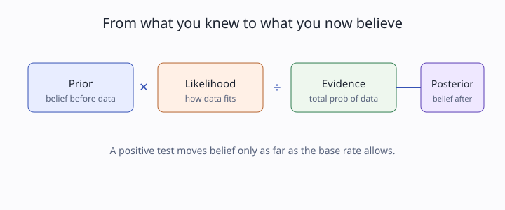

Track 1: Foundations, the update
You can model the chance of seeing the data if a hypothesis were true. How do you turn that into the chance the hypothesis is true given the data?

A fraud model flags 1 transaction in 100 as suspicious, and you know from last quarter that about 2% of transactions are genuinely fraudulent. When a single transaction trips the flag, the question is not "how often does fraud trip the flag" but "given this flag, how likely is fraud", and those two numbers are not the same.
Think of a detective who starts with a shortlist of suspects (the prior), then weighs each new clue by how well it fits each suspect (the likelihood). The clue does not name the culprit on its own; it reweights a list that already existed.
Hold the test's accuracy fixed and drop the fraud base rate from 2% to 0.2%. Predict which way the chance-of-fraud-given-a-flag moves, and by roughly how much, before you compute it.
A conditional probability rescales the world to the part where one event is known. Writing the joint probability of a hypothesis H and data D two ways gives the whole rule in one step:
P(H ∩ D) = P(D|H) · P(H) and also P(H ∩ D) = P(H|D) · P(D).
Setting them equal and solving for the quantity you want:
P(H|D) = P(D|H) · P(H) / P(D), where P(D) = Σ_h P(D|h) · P(h).
The three named pieces are the prior P(H), the likelihood P(D|H), and the evidence P(D) that renormalizes so the posterior sums to 1. The rule is a rearrangement of conditional probability, nothing more.
A test has P(positive|disease) = 0.9. A patient tests positive. Why is it wrong to conclude P(disease|positive) = 0.9?
Correct: P(positive|disease) and P(disease|positive) are different conditionals; Bayes' rule converts between them using the prior and the evidence. The tempting wrong answer mislabels 0.9 as a false-positive rate, but 0.9 is the sensitivity; the error is treating the flip as free, not mislabeling the number.
On a growth team's fraud-review dashboard, a model surfaces a queue of "high risk" transactions every morning. Analysts who read the flag as the probability of fraud waste hours, because at a 2% base rate most flagged items are still legitimate. Reading the flag through Bayes' rule tells you the queue is a filter, not a verdict.
The detective and dashboard framing assumes you can name the base rate. When the base rate is genuinely unknown or drifting week to week, the prior itself is in question, and a single Bayes update can mislead until you account for that drift.
You know P(flag if fraud); you want P(fraud if flagged).
Scale your starting belief by how well the data fits, then renormalize.
Prior, likelihood, evidence, posterior.
P(H|D) = P(D|H)·P(H)/P(D)
P(D) sums over all hypotheses2% fraud, 90% flag-if-fraud, 9% flag-if-clean.
0.9·0.02 = 0.0180.018/(0.018+0.0882) ≈ 0.17A wrong or drifting base rate poisons the answer.
Bayes' rule answers a backwards question: you can measure how often a flag fires when fraud is present, but you care how often fraud is present when the flag fires. You get there by starting from how common fraud is, multiplying by how well the flag fits, and dividing by how often the flag fires at all. The base rate does most of the work, which is why a rare event stays unlikely even after a positive signal. The same arithmetic runs a medical test, a spam filter, or an A/B readout. It fails the moment you cannot trust the base rate you started from.
P(D) as a sum and say in words what each term counts.Take a spam filter that catches 95% of spam and wrongly flags 3% of real mail, with 40% of incoming mail being spam. Compute the chance a flagged message is actually spam, then double the real-mail volume and recompute to stress-test how the base rate moves the answer.
Disease prevalence 1%, sensitivity 90%, false-positive rate 9%. Then
P(disease|positive) = (0.9·0.01) / (0.9·0.01 + 0.09·0.99) = 0.009 / 0.0981 ≈ 0.092.
A positive test leaves the patient about 9% likely to be ill.
Same test, prevalence now 5%. Fill the blanks: numerator 0.9·____ = ____; evidence ____ + 0.09·0.95 = ____; posterior ≈ ____.
Numerator 0.9·0.05 = 0.045; evidence 0.045 + 0.0855 = 0.1305; posterior 0.045/0.1305 ≈ 0.345. Five-fold prevalence roughly quadruples the posterior.
A loan-default model has sensitivity 0.8 and false-positive rate 0.1; the default base rate is 4%. Compute P(default | flagged).
Model answer: (0.8·0.04)/(0.8·0.04 + 0.1·0.96) = 0.032/0.128 = 0.25. A flag means a one-in-four chance of default, so the queue needs human review, not auto-rejection.
Original case: a single positive medical test. Changed surface: a two-stage screen where a patient must test positive on two independent tests before you update. The invariant is Bayes' rule; the broken assumption is that one piece of evidence is all you have. Write the updated posterior after both positives and say why two stages beat one.
Rubric: full credit names that the first posterior becomes the second prior, multiplies the two likelihood ratios, and notes the two tests must be conditionally independent or the gain is overstated.
Write a 10-line function that takes prior, sensitivity, and false-positive rate and returns the posterior, then run it on a real screening problem you care about.
post = (s·p) / (s·p + f·(1−p)).You have it when your function reproduces the 9.2% medical-test answer above to the third decimal and your rare-event prediction was within a factor of two of the computed value.
Push further: extend it to chain two positive tests and confirm the order of the two updates does not change the final posterior.
| Criterion | Pass | Weak |
|---|---|---|
| Correct formula | uses f·(1−p) in the denominator | forgets the clean-case term, divides by sensitivity alone |
| Base-rate effect | shows posterior dropping as prior drops | reports posterior ≈ sensitivity regardless of prior |
| Sanity anchor | prior 0.5 check matches by hand | no independent check run |
Pass threshold: all three rows at "pass" on a base rate you did not see in the worked example.
Weak answer example: "Posterior is 0.9 because the test is 90% accurate." That ignores the base rate entirely.
If you miss the base-rate row, do this first: re-run the worked medical case at prevalence 1% and 50% and watch the posterior move from 9% to 91% before moving on.
Take one screening or flagging decision from your own work (a fraud queue, a churn alert, a QA defect flag) and write the Bayes update for it in one paragraph a teammate could check, naming the base rate you used and where you got it.
| Criterion | Pass | Weak |
|---|---|---|
| Names a real base rate | cites a source for the prior | assumes 50% with no reason |
| Correct direction | posterior below the flag rate when the base rate is low | claims the flag equals the probability |
| Boundary noted | says when the base rate is too uncertain to trust | no caveat |
Pass threshold: a teammate can reproduce your number from your paragraph alone.
Weak answer example: "The model is 90% accurate so flagged items are 90% fraud." No base rate, wrong direction.
If you miss the direction, do this first: redo the fraud tiny case at a 2% base rate and confirm most flags are false alarms.
Reason about the rule itself, not the arithmetic alone.
A positive fraud flag yields P(fraud|flag) = 0.17 at a 2% base rate. You drop the base rate to 0.2% and keep the test fixed. What happens to P(fraud|flag)?
Correct: with the likelihood fixed, the posterior tracks the prior, so a ten-fold rarer event gives a much smaller posterior. The tempting answer fixates on the unchanged test, but Bayes' rule weights the test by the prior; the test's accuracy alone never sets the posterior.
What does the denominator P(D) actually compute?
Correct: P(D) = Σ_h P(D|h)P(h) is the evidence, the normalizer. The tempting "ignore it" answer fails because it is generally less than 1; dropping it leaves an unnormalized score, not a probability.
Two analysts agree on a test's sensitivity and false-positive rate but report different P(disease|positive). What must differ?
Correct: the posterior depends on the prior, so disagreeing base rates explain the gap. The tempting "arithmetic mistake" answer assumes the posterior is fixed by the likelihood alone, which is exactly the error Bayes' rule corrects.
When does P(H|D) equal P(D|H)?
P(H) = P(D), since the rule multiplies one by P(H)/P(D) to get the other.Correct: Bayes' rule says P(H|D) = P(D|H)·P(H)/P(D), so equality needs P(H)=P(D). The "always equal" answer is the base-rate fallacy in its purest form.
A second independent positive test arrives. How do you update?
Correct: sequential updating chains the rule, posterior becoming prior, which is well-defined when the tests are conditionally independent. Averaging discards the compounding evidence and understates how much two positives shift belief.